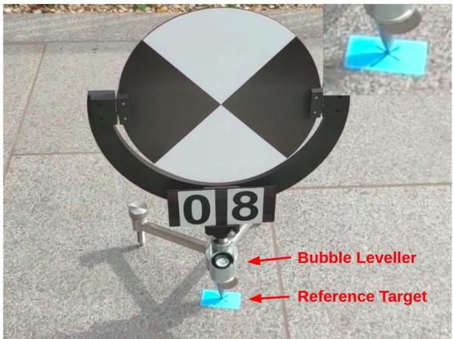
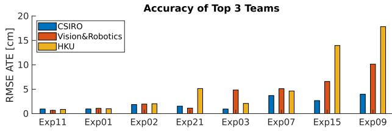

阶段 I · 数据集与评测 / Lesson 0183
Hilti-Oxford（2023）：把评测推向绝对精度
它是一把什么样的尺子？——用「测绘级扫描仪建图 + 地面手工放置的毫米级靶标」给出毫米级稀疏真值，再把评测从「相对排名」升级成「绝对精度 + 是否跟丢」的一杆天平。🏗️ 这一课讲透：毫米级真值是怎么在数十米场景里做出来的，以及为什么「跟丢」比「不准」扣得狠得多。
🎯 主题：毫米级基准 + Hilti SLAM Challenge 评分函数
👥 作者：Hilti 与牛津大学联合（正文未标注发表处）
📅 年份 · Hilti-Oxford Dataset: A Millimeter-Accurate Benchmark for SLAM
本节目标 读完你应该能：说清 Hilti-Oxford 的「三层真值」（先验地图 / 稀疏毫米靶标 / 稠密开发真值）各是什么、精度多少；解释为什么毫米级精度是「分区域的」（靶标附近准、两靶标之间靠插值）；复述挑战赛评分函数怎么给分、为什么「跟丢」比「不准」扣得重；把它的毫米级和 TUM、Newer College 的精度档对上号。
和前面课程怎么接 ★ 0180 TUM 用 ATE 做「相对排名」；Hilti 进一步用控制点把评测推到绝对精度 ，并发明评分函数——这是 ATE 的升级版。★ 0181 Newer College 是厘米级间接真值，本篇是毫米级、但靠「布靶标 + 后期处理」换来的，精度档高一级、代价是稀疏。★ 第四季 0073 的 KITTI 排名是相对排名，本篇说明「绝对精度」才是更硬的标准。★ 第八季 0170 / 0173 附近曾点到 Hilti SLAM Challenge，本篇正是那场比赛背后的数据基座与评分规则。★ 第一季 0013 的评测口径警惕，在这里落实为「成功判据不只是误差，还包括有没有跟丢」。
1. 一句话定位：一把毫米级的尺子
如果说 Newer College（0181）是「大场景厘米级」、M2DGR（0182）是「分段精度」，那 Hilti-Oxford（2023）的目标是毫米级 ——而且是在数十米到上百米的真实工地 / 剧院 里做出毫米级。怎么做到的？靠两套东西：① 一台测绘级扫描仪建出高精度地图；② 在地上手工放置精确的蓝色十字靶标 （控制点），靶标处误差 < 1 mm。
更重要的是，它把评测从「谁的 ATE 小谁赢」这种相对排名 ，升级成一把天平 ：一边是精度，一边是「有没有跟丢」。这正是它区别于前面几篇的精髓。
生活类比：评委打分不能只看「平均误差」，还得看「选手有没有中途晕倒弃赛」。Hilti 的评分函数就是这张评分表——误差小给分，但一旦跟丢（轨迹飞了），扣分比不准狠得多。
2. 它长什么样：Phasma 平台与传感器
平台是一台手持设备 「Phasma」 ：Hesai PandarXT-32（32 线激光，10 Hz，120 m，测距精度 1 cm）、5 个 Alphasense 鱼眼相机（40 Hz）、Bosch BMI085 IMU（400 Hz）。硬件同步 ，外参由 GOM Atos Q3 微米级 3D 扫描仪校验。关键硬件改动：本版把上一代的 Ouster OS0-64（测距 3 cm）换成了 Hesai（测距 1 cm），这是精度提升的关键。
激光 Hesai PandarXT-32，32 线，10 Hz，测距精度 1 cm（1σ 0.5 cm）。
视觉 5× Alphasense 鱼眼，40 Hz，720×540，含前视立体 + 两侧 + 顶视。
同步与外参 硬件同步；外参由微米级扫描仪校验（比软同步严得多）。
原图注（Fig. 2）： Hilti-Oxford dataset environments: Top: Construction site. Middle: Long office corridor (left), Sheldonian stairs (right). Bottom: Sheldonian lower gallery (left) and exterior (right).怎么看这张图： 这张图把它的「考场」摆出来——上面是工地（纹理少、色彩少、易退化），中间左边是长办公室走廊 、右边是Sheldonian 剧院楼梯 ，下面是剧院下廊和外景。盯着看：这些场景的共同点是「几何相似、特征稀疏、长直结构」，正是用来逼 SOTA 到极限的退化序列。
3. ★ 真值是怎么来的：三层真值
它的真值分三层，精度从密到疏：
(A) 先验地图 ：Z+F Imager 5016 扫描仪（量程 360 m，线性误差 1 mm+10 ppm/m，测距噪声亚毫米），用反光靶标 + 平面配准 + 光束法平差建图。91%/95% 扫描位置不确定度 < 3 mm。(B) 稀疏评测真值（核心） ：地面贴蓝色十字，把 Phasma 金属尖端放在十字中心、调气泡水平，手工误差 < 1 mm 。每序列仅 5–10 个这样的瞬时控制点。(C) 稠密开发真值 ：把每条去畸变激光扫描用 ICP 注册到先验地图，精度 1–2 cm，仅供开发用。
多来源校验：扫描站间配准不确定度（sub-mm 先验 → 平差后 < 3 mm），且靶标在多次扫描中可见以增加约束。一句话：毫米级不是「处处毫米」，而是「靶标处毫米 + 地图厘级兜底」。
4. ★ 真值精度是多少：分区域的毫米级
具体数字：稀疏评测真值 毫米级（手工放置误差 < 1 mm） ；先验地图单扫描不确定度 91%/95% 在 3 mm 内；稠密开发真值 1–2 cm 。注意：激光-IMU 未单独外参标定，可能给控制点带来「几毫米」误差。
关键是「分区域」。 毫米级只保证在靶标附近 ；两个靶标之间，靠地图与插值，精度会下降。所以它不是「整条轨迹处处毫米」，而是「若干控制点毫米、其余厘级」。理解了这点，你才不会误以为它和 TUM 动捕（全场 <10 mm）完全等价。
毫米级靶标：一面真实的墙 + 几个控制点
靶标（蓝十字）附近毫米级，两靶标之间靠插值，精度下降——精度是「分区域」的
真实墙面（工地 / 剧院）
先验地图：Z+F Imager 5016 扫描仪
91% / 95% 扫描位置不确定度 < 3 mm
反光靶标 + 平面配准 + 光束法平差
Phasma 金属尖端放在十字中心
调气泡水平 → 手工误差 < 1 mm
蓝十字 = 控制点，每序列仅 5~10 个
靶标之外：靠先验地图插值
毫米级只在控制点处成立
地面（放蓝十字靶标）
靶标 A
< 1 mm
尖端居中
靶标 B
< 1 mm
调气泡水平
靶标 C
< 1 mm
手工放置
两靶标间：靠地图插值
精度下降 → 厘级
两靶标间：靠地图插值
精度下降 → 厘级
先验地图（Z+F 扫描仪）兜底：单扫描 < 3 mm
每序列仅 5~10 个靶标 → 真值是「稀疏」的
毫米级是「点状」的：靶标处极准，中间靠插值
靶标处：手工放置误差 < 1 mm（Phasma 尖端居中、调气泡水平）
两靶标之间：靠 Z+F 先验地图插值 → 精度掉到厘米（控制点稀疏）
要记住：毫米级只在靶标处；其余靠插值 → 精度分区域，不是处处毫米
这张图在画什么： 一面真实墙面下的地面，摆了三个蓝色十字靶标（A/B/C），每个都标「< 1 mm」（Phasma 金属尖端居中、调气泡水平手工放置）。两个靶标之间用黄色虚线连出「靠地图插值、精度下降到厘级」。上方注明先验地图（Z+F 扫描仪）兜底 < 3 mm，并提醒每序列仅 5–10 个靶标。怎么看这张图： ① 毫米级是局部保证 ，只在你亲手放了靶标的地方；② 两靶标之间，真值靠先验地图插值得到，精度自然掉到厘米；③ 所以它是稀疏毫米真值 ，不能当成「全场连续毫米」。要记住的一句话： 毫米级真值是「点状」的——靶标处极准，中间靠插值，整体分区域。

原图注（Fig. 8）： A reference target placed on the ground and used for point cloud fine registration. Sparse ground truth points were created by placing Phasma at the cross-hairs of the reference target.怎么看这张图： 这张就是上面自绘图里「蓝十字靶标」的实物照——把 Phasma 的尖端精确放在十字中心，就得到一个 < 1 mm 的控制点。它证明那套毫米级真值不是算法估出来的，而是人手工量出来的物理基准 。
5. ★ 覆盖哪些场景：专逼 SOTA 到极限
两地点：① 列支敦士登 Hilti 工地（100 m×30 m，4 层，纹理/色彩少，易退化）；② 牛津 Sheldonian 剧院（1664 年，6 层，60 cm 宽窄梯、穹顶）。挑战序列 8 条（2022 挑战赛）：Exp01 工地地面(easy)、Exp02 多层(medium)、Exp03 楼梯(hard)、Exp07 100 m 长走廊(medium)、Exp09 穹顶(hard)、Exp11 下廊(medium)、Exp15 阁楼-上廊(hard)、Exp21 室外(easy)，外加 7 条 additional。退化要素：剧烈摇动、动态遮挡、几何相似窄梯、暗角。
退化序列连环画：长走廊 / 窄梯 / 暗角
这些场景几何相似、特征稀疏，专门逼 LiDAR/视觉 SLAM 到极限
长走廊（Exp07）
难度：medium
两侧重复立面
重复结构→特征难分
激光也缺远约束
100 m 长 · 几何相似
CSIRO 头部也 3.7 cm
窄楼梯（Exp09）
难度：hard
贴墙转向 · 视角受限
60 cm 宽梯 · 之字形
无窗 · 约束极少→易漂
远处约束断供
最难：132s 进无窗段
头部误差 4.0 cm
暗角（Exp15）
难度：hard
暗
上廊 · 相机直接瞎
暗角缺纹理
光线不足
头部误差 2.7 cm
要记住：退化 = 约束少；这些序列正是挑战赛用来拉开差距的
论文：头部方案全是 LiDAR-惯性、无相机——退化场景相机非必需
退化 = 约束骤减
长走廊 / 窄梯 / 暗角
头部误差 2.7~4.0 cm
离毫米级仍很远
这张图在画什么： 三格退化场景。① 长走廊（Exp07）：透视长廊，两侧重复立面，标「100 m、几何相似」，连头部方法也只有 3.7 cm；② 窄楼梯（Exp09）：之字形窄梯，标「60 cm 宽、无窗、约束极少」，最难的段在 132 s 后进入无窗区；③ 暗角（Exp15）：一个近乎全黑的房间，标「上廊、光线不足」。怎么看这张图： ① 长走廊的重复立面 让视觉/激光缺乏可区分特征；② 窄梯无窗 ，激光只能扫到近处结构，远处约束断供；③ 暗角直接让相机「瞎」。三者都让 SLAM 的约束骤减。要记住的一句话： 退化序列靠「减少约束」逼方法现原形，这正是一把毫米级尺子的用武之地。
6. 挑战赛评分函数：一杆天平
Hilti 不只给真值，还配套了一个评分函数 。先用 SE(3) Umeyama 对齐把估计轨迹与控制点配准，再按逐点绝对距离 e_i 给分 s_i：
这句话在说什么： 这个式子先把你的轨迹和控制点用刚体变换（SE(3)，只旋转平移、不缩放）对齐，然后看每个控制点差多远——差小于 1 cm 给 10 分（满分），1–3 cm 给 6 分，3–6 cm 给 3 分，6–10 cm 给 1 分，超过 10 cm 直接 0 分。把所有控制点分数平均、再乘 10，得到 0–100 的总分。它和「平均 RMSE ATE」大致同向，但作者特意指出均值 ATE 会骗人 （误差集中在外段时均值被拉平），评分函数更尖。
为什么是「天平」？ 关键在「跟丢」的处理：一旦方法跟丢，轨迹会飞到离控制点很远的地方，e_i 远超 0.10 m，该点直接得 0 分，而且后面一大段可能连续 0 分 。所以「跟丢一次」比「全程稍微不准」扣得狠得多——天平的一边是精度，另一边是「有没有跟丢」，跟丢那端压倒性重。
评分函数 = 一杆天平：精度 vs 是否跟丢
先 SE(3) 对齐再打分；跟丢一次 → 连续 0 分，比「全程稍微不准」扣得狠得多
左盘：精度
e_i < 1cm → 10 分
1~3cm → 6 分
3~6cm → 3 分
6~10cm → 1 分
鼓励「准」
右盘：是否跟丢
e_i ≥ 10cm → 0 分
跟丢 → 连续 0 分
扣分压倒性重
比「不准」狠得多
惩罚「失联」
重
天平向右（跟丢）倾斜
均值 ATE 会骗人：误差集中外段被拉平
冠军 CSIRO 563.8 分 / 2.07 cm；视觉-only OKVIS2 仅 32.5 分
要记住：天平向右（跟丢）倾斜 → 评分函数惩罚「失联」远胜「小误差」
分数平均 ×10 → 0~100；从相对排名到绝对评测的关键一步
先 SE(3) 刚体对齐（不缩放）
再按逐点距离 e_i 给分
满分档：e_i<1cm=10 分
分档粗 → 歧视大误差
六档：10/6/3/1/0 分
跟丢段整段归零
扣分比重压倒性
平均×10 → 总分 0~100
均值 ATE 会骗人
天平倾向跟丢端
这张图在画什么： 一杆天平，左盘写「精度」（e_i 越小分越高：<1cm=10、1–3cm=6、3–6cm=3、6–10cm=1），右盘写「是否跟丢」（e_i≥10cm=0 分，跟丢连续 0 分）。右盘砝码画得更大更红，表示「跟丢」这端压倒性重。怎么看这张图： ① 左盘鼓励「准」，但每档只差几分；② 右盘一旦触发（跟丢），不是扣几分，而是整段归零 ；③ 所以一个会偶尔跟丢的方法，总分可能远低于一个「全程小误差但不出彩」的方法。要记住的一句话： 评分函数把「有没有跟丢」放在比「准不准」更重的位置——这是从相对排名到绝对评测的关键一步。

原图注（Fig. 9）： Summary of the top three teams' RMSE ATE (cm), sorted from smallest to largest error. Results in bold have reached the desired sub-cm accuracy.怎么看这张图： 这是挑战赛结果——冠军 CSIRO（Wildcat SLAM）563.8 分、平均 RMSE ATE 2.07 cm；视觉-only 最好的 OKVIS2 仅 32.5 分、误差 10–20 cm。盯着看：头部全是 LiDAR-惯性、没有纯相机 ，说明在退化场景里相机并非必需，激光仍能靠扫描远处建筑/地面「透窗」获取约束。
7. 什么时候该用 / 不该用
✅ 该用 评「要求毫米级绝对精度」的激光/激光-惯性 SLAM；想用挑战赛评分函数做公平排名；测长走廊、窄梯、暗角等极端退化 序列下的表现。
❌ 不该用 当需要稠密连续 毫米真值（它只有 5–10 个稀疏控制点）；当场景无人工布靶标条件（靶标要人去放）；当只需相对排名而不关心绝对精度。
8. 作者自述的局限
三点：① 评分只管轨迹精度，不考虑延迟/算力 （队伍用了离线多序列融合后处理，结果可能优于单序列在线）；② 激光-IMU 未单独外参标定，控制点可能有几毫米误差；③ 稀疏真值仅 5–10 个瞬时点 ，中间靠插值。补充：2021 挑战版用 Ouster OS0-64（测距 3 cm），本版换 Hesai（1 cm）是精度跃升的关键硬件；最难的 Exp09 自 132 s 起进入无窗窄梯，约束极少。
OCR 订正与术语澄清： 论文里「7 12 April tags」缺了乘号，应为「7×12 AprilTags」（共 84 个，用于先验地图的站点配准 ）；本课讲的「地面蓝色十字靶标」是另一回事 ——它是给人把 Phasma 尖端摆上去、产生稀疏评测控制点 用的，不要和 AprilTags 混为一谈。另：论文 Table II（挑战结果表）在抽取时严重串行、版式失真，本课一律以正文叙述的数字为准（冠军 CSIRO 563.8 分、平均 RMSE ATE 2.07 cm）。
互动判断
Hilti 评分函数里，一个方法「全程误差 8 cm（每点得 1 分）」和一个方法「前 90% 误差 2 cm、最后 10% 跟丢归零」，谁总分高？
后者更高
前者更高
9. 读完你应该能回答
Hilti-Oxford 的「三层真值」各是什么、精度分别多少？
为什么说它的毫米级是「分区域的」？靶标之间精度怎么变？
挑战赛评分函数怎么给分？为什么「跟丢」比「不准」扣得狠？
它和 TUM（毫米/全场）、Newer College（厘米）在精度档和评测哲学上有何不同？
为什么挑战赛头部方案全是 LiDAR-惯性、没有纯相机？
课后练习
写出 Hilti-Oxford 三层真值的名称、获取方式和精度，并说明为什么它是「稀疏」毫米真值。
展开查看答案 (A) 先验地图：Z+F 扫描仪建图，单扫描 <3 mm；(B) 稀疏评测真值：地面手工放蓝十字靶标，误差 <1 mm，每序列仅 5–10 个；(C) 稠密开发真值：激光扫描 ICP 注册到地图，1–2 cm。因为靶标要人去放、数量极少，所以毫米级只在这些点处成立，其余靠插值——是稀疏毫米真值。
评分函数中，若某控制点 e_i = 0.05 m，得几分？若 e_i = 0.12 m 呢？这说明什么？
展开查看答案 e_i=0.05 m 落在 [0.03,0.06) → 3 分；e_i=0.12 m ≥0.10 m → 0 分。说明评分函数对「超过 10 cm」零容忍：一旦跟丢飞远，该点直接归零，且连续段可能全零，惩罚远重于「小误差」。
为什么 Hilti 的毫米级和 TUM 的毫米级不是一回事？各适合什么？
展开查看答案 TUM 毫米级来自动捕全场连续测量（小室内 <10 mm）；Hilti 毫米级只在稀疏靶标处、靠人工放置+地图插值，且场景大数十倍。TUM 适合小房高精度评测，Hilti 适合大场景绝对精度与退化序列排名。
用天平比喻，解释评分函数为什么比「平均 RMSE ATE」更尖、更能拉开方法差距。
展开查看答案 平均 RMSE 把所有点误差平方平均，误差集中在外段时会被「均值」拉平、看不出局部崩；评分函数对 >10 cm 直接 0 分，跟丢段整段归零，等于在天平右盘压了重砝码，能立刻把「会失联」的方法和「全程稳」的方法拉开差距。